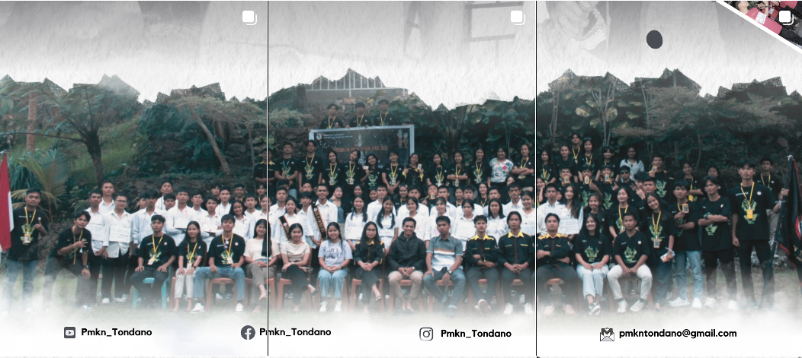
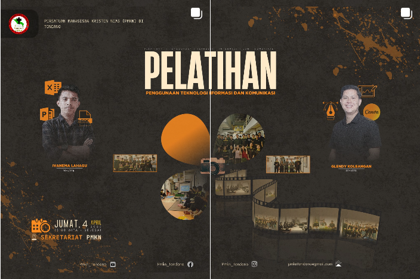
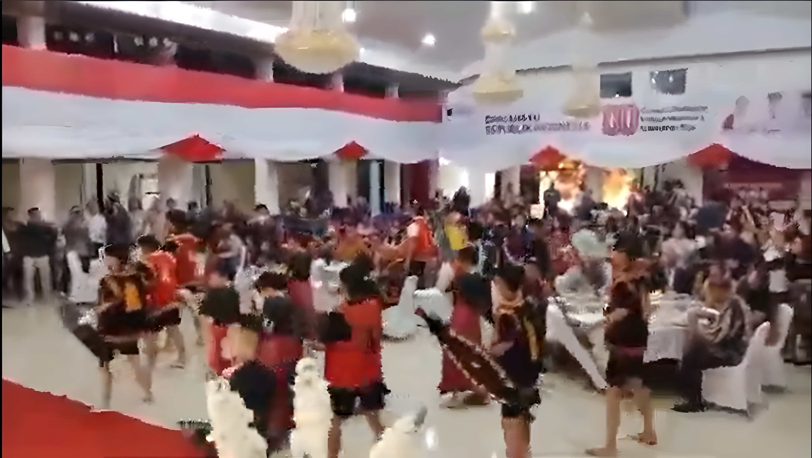
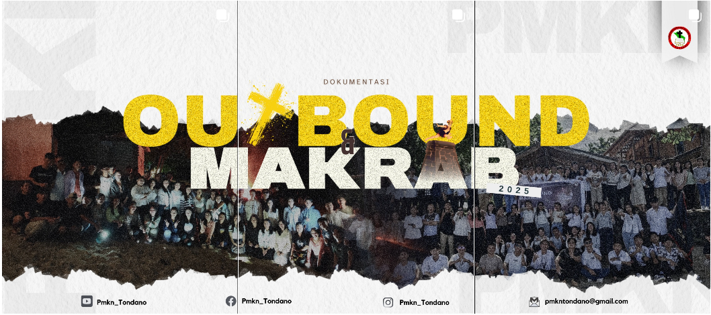
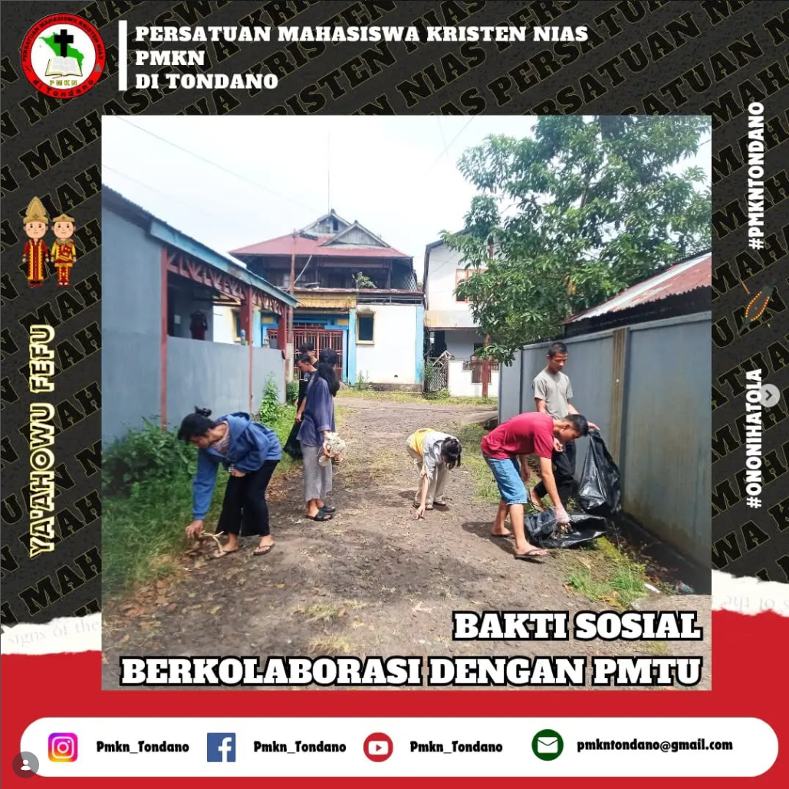
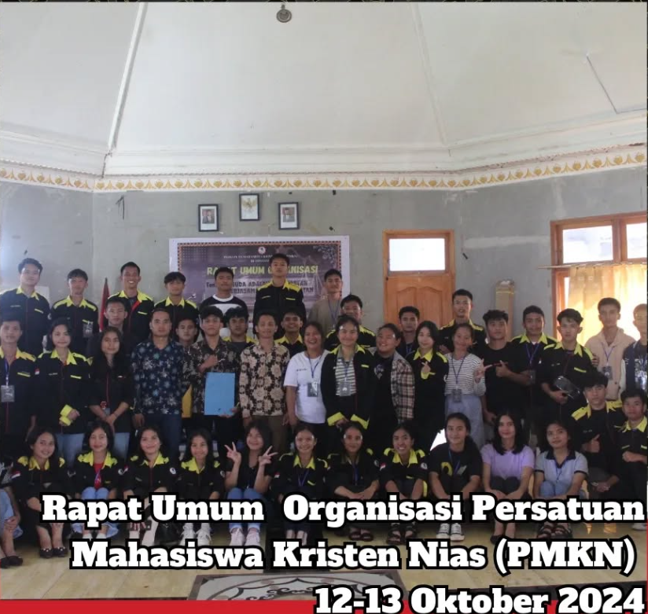

PMKN TONDANO
Memuat Halaman...
Memuat Halaman...
 PMKN Tondano
PMKN Tondano
Bersama kita bertumbuh dalam iman, layanan, dan solidaritas — Persaudaraan
Keunggulan Persatuan Mahasiswa Kristen Nias (PMKN) di Tondano

Ya’ahowu!
Puji syukur kita panjatkan ke hadirat Tuhan Yang Maha Esa atas rahmat dan kasih-Nya sehingga platform digital PMKN Tondano ini dapat hadir di tengah-tengah kita. Saya dengan bangga menyambut rekan-rekan mahasiswa Nias di situs resmi Persatuan Mahasiswa Kristen Nias (PMKN) Tondano.
Sebagai wadah organisasi yang dinamis, kami berkomitmen untuk menjadi rumah yang hangat bagi seluruh mahasiswa Nias dalam mengembangkan potensi akademik, spiritual, dan sosial. Melalui semangat kekeluargaan dan nilai-nilai kristiani, kita bergerak bersama untuk memberikan dampak positif bagi masyarakat dan daerah asal kita.
Semoga melalui situs ini, Anda dapat menemukan informasi bermanfaat mengenai program kerja, kegiatan sosial, serta ruang kolaborasi yang kami sediakan. Selamat menjelajah dan mari berkarya bersama!
Tetap update dengan Kegiatan terbaru dan pengumuman penting
Persatuan Mahasiswa Kristen Nias
MEDIA SOSIAL & DOKUMENTASI
Nikmati Keseruan yang telah terjadi di dalam Organisasi.

Perengkrutan Anggota Baru PMKN di Tondano.
Penggunaan Teknologi Informasi dan Komunikasi.


Adat Nias tidak terlupakan.
Malam Keakraban seluruh anggota PMKN di Tondano.

Bergotong royong dan berkolaborasi dengan organisasi mitra.

Rapat Umum Organisasi.

Data otomatis terupdate berdasarkan rekapitulasi pengurus pusat PMKN Tondano.
Bergabunglah dengan keluarga besar mahasiswa Nias di Tondano. Mari bertumbuh, berkarya, dan berproses bersama dalam semangat kekeluargaan Kristiani.
PMKN Assistant say:
Yakin mau hapus semua
pesan?
Online • Siap membantu

Selamat datang kembali!